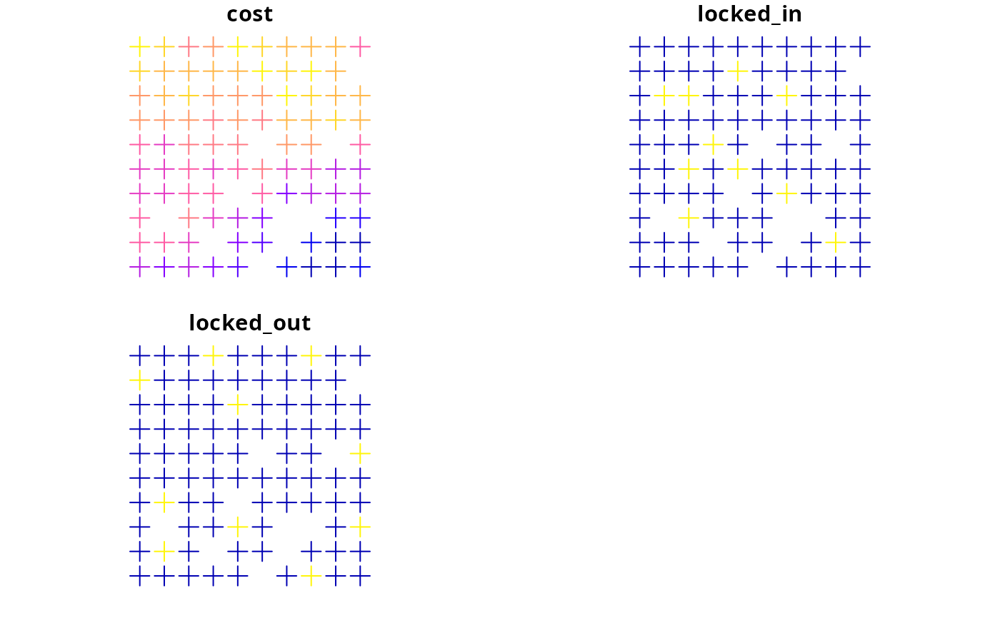

Simulated conservation planning data
Data for making spatial prioritizations using simulated data.
data(sim_features) sim_features sim_pu_polygons sim_pu_lines sim_pu_points sim_pu_raster sim_phylogeny sim_locked_in_raster sim_locked_out_raster
Format
- sim_features
RasterStack-classobject.- sim_pu_polygons
SpatialPolygonsDataFrame-classobject.- sim_pu_lines
SpatialLinesDataFrame-classobject.- sim_pu_points
SpatialPointsDataFrame-classobject.- sim_pu_raster
RasterLayer-classobject.- sim_phylogeny
phyloobject.
Details
sim_pu_rasterPlanning units are represented as raster data. Pixel values indicate cost.
sim_locked_in_rasterPlanning units are represented as raster data. Pixel values are binary and indicate if planning units should be locked in.
sim_locked_out_rasterPlanning units are represented as raster data. Pixel values are binary and indicate if planning units should be locked out.
sim_pu_polygonsPlanning units represented as polygon data. The attribute table contains data indicating the expenditure required for prioritizing each planning unit ('cost' column), if the planning units should be selected in the solution ('locked_in' column), and and if the planning units should never be selected in the solution ('locked_out' column).
sim_pu_pointsPlanning units represented as point data. The attribute table follows the same conventions as for
sim_pu_polygons.
sim_pu_linesPlanning units represented as line data. The attribute table follows the same conventions as for
sim_pu_polygons.
sim_featuresThe simulated distribution of ten species. Pixel values indicate habitat suitability.
sim_phylogenyThe phylogenetic tree for the ten species.
Examples
# load data data(sim_pu_polygons, sim_pu_lines, sim_pu_points, sim_pu_raster, sim_locked_in_raster, sim_locked_out_raster, sim_phylogeny, sim_features) # plot data par(mfrow = c(3, 3)) plot(sim_pu_raster, main = "planning units (raster)") plot(sim_locked_in_raster, main = "locked in units (raster)") plot(sim_locked_out_raster, main = "locked out units (raster)") plot(sim_pu_polygons, main = "planning units (polygons)") plot(sim_pu_lines, main = "planning units (lines)") plot(sim_pu_points, main = "planning units (points)") if (requireNamespace("ape", quietly = TRUE)) { ape::plot.phylo(sim_phylogeny, main = "simulated phylogeny") } else { message("the \"ape\" package needs to be installed to plot phylogenies") } par(mfrow = c(1, 1))plot(sim_features)